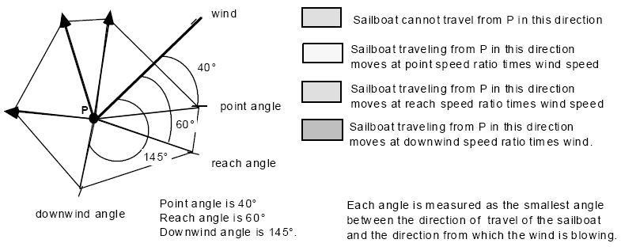

Home Page
F.A.Qs
Statistical Charts
Past Contests
Scheduled Contests
Award Contest
| Online Judge | Problem Set | Authors | Online Contests | User | ||||||
|---|---|---|---|---|---|---|---|---|---|---|
| Web Board Home Page F.A.Qs Statistical Charts | Current Contest Past Contests Scheduled Contests Award Contest | |||||||||
|
Language: Sail Race
Description The Atlantic Coastal Mariners (ACM) sailing club is building a race planning tool to estimate durations of sailboat races with various race courses, wind directions, and types of sailboats. You must write a program to help with that task.
A race course is defined by marks with up to 10 marks per race course. A sailboat must sail to all marks in the specified order. The marks are identified as x- and y-coordinates on a hypothetical grid with a single unit equal to one nautical mile (nm). The positive y-axis is oriented due north and the positive x-axis is oriented due east. The race course is in open waters without any navigational limitations. For purposes of this planning tool, the only driving force controlling a sailboat is the wind. The wind determines the sailboat's speed of advance and limits its direction of travel. The wind is constant for the duration of each race and is specified in terms of the direction from which the wind is blowing and its speed in nautical miles per hour (kts). Wind direction is specified as a compass bearing in degrees measured clockwise from 000.0° as north. Sailboats cannot steer any closer to the wind than a given "point angle" off the wind direction. In order to make progress closer to the wind direction, the sailboat must tack back and forth across the wind, steering no closer to the wind than its point angle. Each time the sailboat tacks or passes a mark it incurs a tack penalty. For this simulation, each sailboat will travel each leg of a race (the portion of a race between successive marks) with the minimum number of tacks and the minimum possible distance. Courses and directions are specified as compass bearings in degrees measured clockwise from 000.0° as north. The speed of a sailboat is determined by the sailboat design, wind speed, and direction steered relative to the wind. In the figure, the wind direction is 45° and the point angle is 40°. This means then that this sailboat cannot steer between 5° and 85° because it cannot point that closely into the wind.  Each angle is measured as the smallest angle between the direction of travel of the saiboat and the direction from which the wind is blowing. For this problem, the ratio of sailboat speed to wind speed is one of three ratios, selected as shown in the table below according to the angle off the wind : Angle off wind Applicable ratio For instance, if the boat is steering at an angle off the wind which is between the reach angle and downwind angle then boat speed = reach speed ratio * wind speed Input Your solution must accept multiple input data sets. Each data set represents a different race course to be evaluated for a single sailboat. The data set begins with a line with 4 numbers: wind direction (real), wind speed (real), tack penalty (real), and number of marks n (integer). The next line contains six real numbers: point angle, point speed ratio, reach angle, reach speed ratio, downwind angle, downwind speed ratio.
The subsequent n lines of the data set represent the n race marks in the order in which they must be reached. Each line begins with a 2-character mark id followed by the x-coordinate then y-coordinate of the mark. The end of input is denoted by a line of four 0's. Output The output for your program consists of various data calculated for each input data set. Values should be presented with the following precisions and units.
Courses, tacks, directions 0.1 degree Distance 0.01 nm Output for each race begins with a header containing the number of the data set (1 for the first, 2 for the second, etc.) and the number of legs. The next line is the total length of the race course, measured as the sum of distances between successive marks. For each leg of the course, the leg number, beginning and ending mark id's, course from the beginning to end marks of the leg, and the leg distance is presented. This is followed by a listing of the tacks necessary to complete the leg. The tacks for each race are numbered sequentially, with tack numbers beginning with 1 for each race. For each tack, the tack number, the projected sailboat speed, the course steered, and the length of that tack are presented. The summary output for each data set includes the total number of tacks, the total distance traveled for the race, the estimated race duration, and the total tack penalty time incurred by the sailboat after leaving the first mark. Please refer to the example output for the exact format. All numbers are printed to the specified number of digits. There is a blank line after the race header, after each leg and after the race summary. Sample Input 45 10 .1 6 45 0.5 90 0.75 135 0.67 M1 15 10 M2 25 20 M3 22 30 M4 5 25 M5 10 15 M6 10 10 0 0 0 0 Sample Output Race 1 has 5 legs The race layout is 58.48 nm long Leg 1 from mark M1 to M2: direction = 45.0, distance = 14.14 Tack 1: speed = 5.0, direction = 90.0, distance = 10.00 nm Tack 2: speed = 5.0, direction = 0.0, distance = 10.00 nm Leg 2 from mark M2 to M3: direction = 343.3, distance = 10.44 Tack 3: speed = 5.0, direction = 343.3, distance = 10.44 nm Leg 3 from mark M3 to M4: direction = 253.6, distance = 17.72 Tack 4: speed = 6.7, direction = 253.6, distance = 17.72 nm Leg 4 from mark M4 to M5: direction = 153.4, distance = 11.18 Tack 5: speed = 7.5, direction = 153.4, distance = 11.18 nm Leg 5 from mark M5 to M6: direction = 180.0, distance = 5.00 Tack 6: speed = 6.7, direction = 180.0, distance = 5.00 Race 1 was 64.34 nm long with 6 tacks Estimated race duration is 11.47 hours with 0.50 hours of tack penalty Source |
[Submit] [Go Back] [Status] [Discuss]
All Rights Reserved 2003-2013 Ying Fuchen,Xu Pengcheng,Xie Di
Any problem, Please Contact Administrator